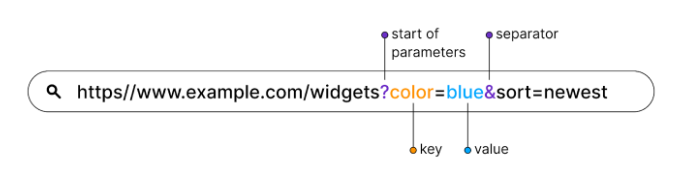

Welcome to our detailed session on APIs! Today, we will explore the intricacies of URLs, query parameters, and the JSON format. Additionally, we'll learn how to effectively interpret API documentation.
URLs (Uniform Resource Locators) are the addresses used to access resources on the web. A URL consists of several components:
Query parameters are used to refine or modify requests made to a server. They follow a key-value pair structure and are appended to the URL after a question mark (?). Multiple parameters are separated by an ampersand (&).
JSON (JavaScript Object Notation) is a text format for storing and transporting data. It is designed to be simple to read and write for humans, and easy to parse and generate for machines.
JSON is structured as:
Here is a basic example of JSON:
{
"firstName": "John",
"lastName": "Doe",
"age": 25,
"isStudent": false,
"courses": ["Math", "Science", "Art"]
}
JSON supports various data types which include:
Understanding these data types is essential for structuring JSON correctly.
Postman allows you to easily work with JSON, whether you're sending data (in a POST request, for example) or receiving it as part of a response. Here's how you can set up a POST request with a JSON body in Postman:
Here's an example of JSON data you might send in the body of a POST request:
{
"email": "john.doe@example.com",
"password": "12345"
}
When you receive a response in Postman, it often contains JSON data. It's important to understand how to interpret this. Postman provides a pretty-print version by default, making it easier to read.
Here's an example of a JSON response:
{
"id": 1,
"name": "John Doe",
"email": "john.doe@example.com",
"roles": ["user", "admin"]
}
You can navigate through the JSON structure in Postman to find specific pieces of data, or use Postman's built-in tools to test and validate the response.
Today, we've taken a deep dive into the world of JSON and explored how to effectively use Postman to send and interpret API requests and responses.
With these tools and knowledge, you're well on your way to becoming proficient in API interaction and testing. Keep practicing, explore more complex data structures, and don't hesitate to experiment with different APIs.
Happy coding and testing!